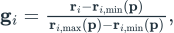
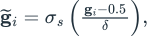

整体概括
把一系列冷却器仿真变成一次训练
作者为嵌入式射流歧管微通道建一个跨几何的稳态代理：输入坐标和入口宽、出口宽、通道宽、高，输出速度分量、压力及流体与固体温度场。它在给定材料、几何、边界条件下替代反复求解，不是从温度传感器反推边界，也不是整个芯片的瞬态热点监控。
对照原文证据
Our network accepts the three spatial coordinates along with four geometric parameters as inputs, including microchannel height, width, and jet inlet/outlet widths. Once trained, the model predicts the coupled flow and temperature fields for any parameter combination in a continuous design space within milliseconds, enabling over four orders of magnitude reduction in per-design computational time and cost relative to conventional finite-element simulations on a 56-core workstation.As shown in Fig. 1 (a)-(c), the computational domain is symmetry-reduced from the entire cooler to a single microchannel unit, with symmetry boundary conditions imposed on the corresponding planes to minimize cost. The solid domain is the substrate that conducts heat from the active device layer to the coolant, while the fluid domain represents the coolant passages. Without loss of generality, we consider here a silicon substrate in conjunction with water as the coolant.Third, while the current model treats the flow as laminar and steady, extending the framework to turbulent or transient regimes would be valuable for more complex operating conditions.精度与开销分别看：对照数值参考，不是实测
文中用 625 次 FEM 参考仿真校验，速度、温度场相对 L2 误差约 8.1% 和 5.6%；这些是整批抽样点的归一化场误差，不是每个设计的最坏误差。每次查询快不等于小样本任务一定划算，须把一次性 GPU 训练计入总耗时。
对照原文证据
The quantitative errors of the full PINN model are summarized in the first row of Table 1 . The trained PINN achieves relative MSEs of 0.66% and 0.31% for the velocity and temperature fields, respectively, corresponding to relative L_{2} errors (i.e., the square root of the relative MSEs) of 8.1% and 5.6%.Through systematic validation against 625 finite-element simulations, the network achieves relative L_{2} errors of 8.1% and 5.6% for the velocity and temperature fields, respectively, while reducing the per-design computational time and cost by over four orders of magnitude.Because the PINN involves a one-time training cost, its practical benefit is best assessed in terms of the break-even point. Based on wall-clock time, the training cost is amortized after approximately 108 design evaluations. Beyond this point, the cumulative time savings increase nearly linearly with the number of additional queries. This makes the proposed framework particularly attractive for applications that require many repeated evaluations, such as design optimization, sensitivity analysis, and interactive exploration of EMMC geometries.Research gap
真正昂贵的是扫设计，不是单次求解
作者对照了固定几何的共轭传热 PINN 和其他参数化热沉工作，把难点归为多维几何扫描的开销、对流主导时的训练困难、以及几何一变同一绝对坐标的边界身份也会变。文章回应的是这个冷却结构族，不是全领域查新，也没有说传统 FEM 忽略几何。
对照原文证据
However, parametric optimization of EMMC requires a great number of high-fidelity simulations of three-dimensional (3D) conjugate heat transfer, which is expensive especially when using conventional approaches such as the finite-element method (FEM). When exploring a design space with multiple geometric parameters, the total computational cost becomes prohibitive [ 16 , 39 ] .Zhang et al. utilized PINNs to simulate conjugate heat transfer in manifold microchannel heat sinks, focusing on modeling for a fixed geometry [ 43 ] . Yang et al. proposed a parameterized PINN for the thermal design of a power module based on a layer of millimeter-scale pin-fins [ 39 ] .First, the computational cost of training 3D PINNs remains high [ 43 , 12 ] . Further, the training of PINNs for convection-dominated heat transfer faces a variety of optimization difficulties [ 31 , 17 ] . Finally, parameterized geometries introduce additional complexity that as design parameters change, the spatial relationship between sampling points and domain boundaries varies, making it difficult for networks to distinguish boundaries from interior regions.模型最难的判断是点与边界的关系
同一坐标在一种几何可能临近壁面，在另一种几何却是内部点。作者没有只把参数添到输入末尾，而是让网络看见与当前边界相对的位置；再用扩散较强的容易问题初始化热场，逐步走向目标物理。这是改善表示和优化的设计，并非把边界强约束进网络输出。
对照原文证据
To better represent the parameterized geometry, the initial input \mathbf{x}_{\mathrm{input}} is further augmented with geometric ansatz embeddings. Variations in the geometric parameters can change both the domain to which a point belongs and its relative position with respect to nearby boundaries. To encode this information explicitly, normalized local coordinates are defined for each coordinate direction within the distinct domains:where Pr_{\min}=10^{-6} and Pr_{\mathrm{target}}=6.977 . At the early stage of training, the small effective Prandtl number suppresses the stiffness associated with convection-dominated thermal transport and allows the network to first learn an easier diffusion-dominated temperature field.Boundary and interface conditions are enforced through additional loss terms. For the inlet boundary, the hydraulic and thermal constraints are defined separately because the thermal part is introduced progressively during training:算法主线

原图由 arXiv 加载；若未显示，可打开下方原图链接。
跟着原图读
- 先看哪里
沿 (a) 的绿色选区进入 (b)，再沿虚线到 (c) 的对称计算域；蓝色为水域、白色为硅域，(c) 彩色箭头由喷射入口沿微通道去往出口。
- 能说明什么
(d) 给出冷热歧管交错的布局；(e) 左边是 y–z 投影、右边是 x–z，宽维标了半宽，高度不减半。读代码或建模时先核对对称域与物理尺寸的换算。
箭头和三维几何是示意，不是实测流线或全装置温度。图示没验证各单元相互作用。

原图由 arXiv 加载；若未显示，可打开下方原图链接。
跟着原图读
- 先看哪里
(a) 横轴是离壁距离（μm），纵轴是无量纲嵌入值。两配色对应不同示意入口宽，彩色圆点在不同距离处却共享中心值 0.5。
- 能说明什么
(b) 先定位入口中心与八项局部特征；(c) 左轴读蓝色实线的距离（μm），右轴读红色虚线的嵌入值。几何宽度在变，中心这个相对位置不变。
(a) 所选的几何值只用于视觉对照，别当训练或外推验证范围；不变的是某个相对位置的特征，不是完整场解或边界误差。
先按几何采点，再给坐标加位置标记
硅基底与水流域利用对称性缩为一个通道单元。随几何实时构造体内块与边界面，在壁面、狭缝和进出口加密采样。坐标和四个几何量归一后，与八项光滑的局部位置特征拼接为十五维；经 Fourier 特征和 PirateNet 解码出速度、压力与双域温度。
对照原文证据
As shown in Fig. 1 (a)-(c), the computational domain is symmetry-reduced from the entire cooler to a single microchannel unit, with symmetry boundary conditions imposed on the corresponding planes to minimize cost. The solid domain is the substrate that conducts heat from the active device layer to the coolant, while the fluid domain represents the coolant passages. Without loss of generality, we consider here a silicon substrate in conjunction with water as the coolant.where \mathbf{x}_{\mathrm{norm}} comprises seven normalized spatial coordinates and geometric parameters, and \tilde{\mathbf{g}} denotes eight mapped local geometric features, which together constitute a fifteen-dimensional network input in the present implementation, as illustrated in Figure 2 (b).Interior points are sampled uniformly over the composite multi-block regions corresponding to the jet inlet, microchannels, and jet outlet, whereas boundary points are sampled directly on the corresponding parameterized surfaces. A region-aware importance sampling strategy is further used so that more points are placed near the fluid-solid walls, narrow microchannel gaps, and inlet/outlet boundaries, where velocity and temperature gradients are strongest.This representation is further mapped through Fourier feature encoding and passed to the neural network, which predicts the coupled flow and thermal fields (u,v,w,p,T_{\mathrm{f}},T_{\mathrm{s}}) . The network outputs simultaneously serve as the final solution and as the basis for constructing the physics-informed loss把热物理逐步恢复，而非改实际工作条件
损失既有流固区域的方程残差，也有进出口、基底、绝热顶面、流固界面和对称面的条件。训练早期降低有效 Pr、从匹配导热率起步，缓启基底热约束；入流与顶面用另一退火日程逐步撤掉辅助温度项。训练步数不是物理时间，推断直接查询目标稳态场，不再运行这个日程。
对照原文证据
At the fluid-solid interface, temperature heat-flux continuity are imposed. Other conditions include the inlet and outlet boundaries in the fluid domain, the isothermal base and adiabatic top boundary in the solid domain, and also the symmetry planes. All thermophysical properties are treated as constants for simplicity, therefore the momentum equations are independent of temperature, while the energy equation depends on the velocity field.Here, t_{\mathrm{warmup}}=25,000 , which is one eighth of the total 200,000 training steps. This factor is used consistently to control the thermal curriculum and activation of the heated-base thermal constraint.where Pr_{\min}=10^{-6} and Pr_{\mathrm{target}}=6.977 . At the early stage of training, the small effective Prandtl number suppresses the stiffness associated with convection-dominated thermal transport and allows the network to first learn an easier diffusion-dominated temperature field.In addition to parameter continuation, an auxiliary thermal boundary loss is introduced to stabilize the early stage of optimization. The auxiliary terms at the inlet and top surfaces share a common fading schedule \beta(t)=\min(t/100{,}000,1) , which extends beyond the main curriculum. The inlet loss is assembled as从预测场自动求导，再更新网络参数
JAX 在 GPU 上在线采点，用前向自动微分计算坐标导数、反向传播更新参数，并编译训练环路。SOAP 的 schedule-free 变体与动态梯度归一配合；原文同时写明基准学习率仍有预热和指数衰减，所以 schedule-free 不应读成所有学习率因子固定。FEM 参考用于事后评估。
对照原文证据
where the loss terms include the PDE residuals, the boundary and interface constraints, and the time-dependent inlet, base, and top losses defined above. Because the different loss components can differ substantially in magnitude during training, dynamic gradient normalization is used to balance them [ 31 ] .Optimization is performed using the SOAP optimizer in its schedule-free variant [ 9 , 27 , 28 ] . SOAP combines matrix preconditioning with Adam-style momentum and bias correction, and has been found to improve the robustness of PINN training for stiff multiphysics problems. In the present implementation, the base learning rate is set to \eta=10^{-3} . A linear warm-up is applied over the first 5,000 steps, after which the learning rate decays exponentially by a factor of 0.97 every 2,000 steps during the main stage of training.For this reason, forward-mode automatic differentiation is used for coordinate derivatives, together with reverse-mode backpropagation for parameter updates. This choice is well suited to the present setting and reduces the cost of evaluating the spatial derivatives required by the PDE residuals. The complete training loop, including point sampling, loss evaluation, and optimizer updates, is compiled with just-in-time compiler of JAX to reduce Python overhead.For each parameter combination, 10,000 random evaluation points are sampled in the relevant computational domains, and the reference fields are interpolated onto these locations. In total, this produces 6.25\times 10^{6} point-wise comparisons for evaluation of the trained PINN, which is considerably stricter than comparing only global quantities such as pressure drop or peak temperature.关键公式
归一几何坐标，界面仍靠损失
几何输入式用当前几何的区间两端把坐标映为相对位置；Sigmoid 再将中心和边界附近的变化编码成平滑特征。这支计算只提供线索，不直接令流固温度或通量相等。控制方程与条件另作无量纲化，实际须对固定几何的空间坐标求导。
对照原文证据
To better represent the parameterized geometry, the initial input \mathbf{x}_{\mathrm{input}} is further augmented with geometric ansatz embeddings. Variations in the geometric parameters can change both the domain to which a point belongs and its relative position with respect to nearby boundaries. To encode this information explicitly, normalized local coordinates are defined for each coordinate direction within the distinct domains:where \mathbf{p}=[W_{\mathrm{in}},W_{\mathrm{out}},W_{\mathrm{mc}},H_{\mathrm{mc}}] is the current vector of geometric parameters and \mathbf{r}=[x,y,z] is the spatial coordinate. These local coordinates are then transformed by a smooth embedding function. In this work, a sigmoid function \sigma_{\mathrm{s}} is adopted,To improve numerical conditioning, all governing equations and boundary conditions are cast into a nondimensional form. The characteristic scales used in this work are L_{\mathrm{ref}}=$100\text{\,}\mathrm{\SIUnitSymbolMicro m}$ for the length, U_{\mathrm{ref}}=$1\text{\,}\mathrm{m}\text{\,}{\mathrm{s}}^{-1}$ for the velocity, P_{\mathrm{ref}}=\rho U_{\mathrm{ref}}^{2} for the pressure, and T_{\mathrm{ref}}=$50\text{\,}\mathrm{K}$ for the temperature. The corresponding nondimensional variables are defined asAt the fluid-solid interface, no-slip, temperature continuity, and heat-flux continuity are imposed through流速影响温度，但温度不反推流速
常物性设定让动量和能量单向耦合。读温度方程时，流速决定对流，Re 与 Pr 决定相对扩散强度；界面用导热率比配平热通量。相对 MSE 是先汇总平方误差，再除参考场平均平方加稳定项；相对 L2 则先按无量纲比值开方再写作百分数，不把每点均除以当地真值。
对照原文证据
At the fluid-solid interface, temperature heat-flux continuity are imposed. Other conditions include the inlet and outlet boundaries in the fluid domain, the isothermal base and adiabatic top boundary in the solid domain, and also the symmetry planes. All thermophysical properties are treated as constants for simplicity, therefore the momentum equations are independent of temperature, while the energy equation depends on the velocity field.denote the Reynolds number and Prandtl number, respectively. At the fluid–solid interface, continuity of heat flux giveswhere N is the number of evaluation points for the corresponding field and \epsilon=10^{-8} is introduced to avoid division by zero. Accordingly, the relative L_{2} error is defined as the square root of the relative MSE.用几何局部比例对齐边界

与绝对距离相比，按当前几何宽度量尺度，中心读数不随尺寸改变。教学例：区间 0 到 40 μm 的 20 μm 点与 0 到 50 μm 的 25 μm 点，归一化都为 0.5。
符号与实现提醒
- gᵢ
- 无量纲的第 i 项局部坐标，范围随区间内外而变。
- rᵢ
- 所选方向的物理坐标，与上下界单位一致。
- rᵢ,ₘᵢₙ、rᵢ,ₘₐₓ；p
- 由当前几何参数 p 决定的下、上边界，长度可用 μm。
局部区间长度须非零；特征是输入补充，不是把原点投影到壁面，也不保证条件精确满足。
用光滑映射把局部位置送进网络

局部坐标以中心为零点，缩放后送入 Sigmoid。教学例：只要 gᵢ=0.5 且 δ 非零，Sigmoid 的输入就是 0，输出恰为 0.5；不同宽度的中心给出同一值。
符号与实现提醒
- gᵢ、g̃ᵢ
- 缩放前后的无量纲局部几何特征。
- σₛ
- 斜率由 s 控制的 Sigmoid。
- δ
- 无量纲缩放，控制过渡带的锐度。
式子不保证所有边界残差为零；边界点仍要取样并施加相应损失。
流体能量：对流与热扩散的相对权重
速度场搬运温升，右边的拉普拉斯项扩散温升。教学例：固定 Re=10，设 Pr 从 1 增到 2，扩散系数从 0.1 降到 0.05；这说明训练早期小 Pr 为什么强化扩散。
符号与实现提醒
- u*、T*f
- 无量纲速度向量和流体温升。
- ∇*
- 对无量纲空间位置求导。
- Re、Pr
- 雷诺数、普朗特数，均无量纲。
这是稳态方程；课程序列只在优化时替换 Pr，不模拟温升从某时刻演化。
让训练从容易的热问题续接到目标问题
以裁剪线性因子把有效 Pr 插值到目标。教学例：取 Prₘᵢₙ=0.01、目标值 7，在主预热过半时权重 0.5，得到 3.505；结束后保持 7。
符号与实现提醒
- t、α(t)
- 优化步和对应的主续接比例。
- Pr_eff、Pr_min、Pr_target
- 训练时有效、初始、目标的无量纲 Pr。
这里的教学数字不是论文配置。界面导热率比也续接，但入流/顶面辅助温度项另用更长的退火期。
相对场误差：用参考场的总能量定标
将速度向量差的平方按评价点平均，再除以参考速度向量平方的平均加稳定项。教学例：参考模为 2 m/s、差向量模 0.2 m/s，忽略极小稳定项，相对 MSE 为 1%，相对 L2 为 10%。
符号与实现提醒
- N、i
- 某字段的评价点总数与索引。
- u_pred、u_ref
- 评价点上的预测和参考速度向量，量纲一致。
- ε
- 避免零分母的小稳定项。
不是先求速度大小之差，也不是逐点百分比误差的平均。温度的式 (44) 使用标量；开方前应先撤掉百分数表示。
实验怎么做
四个尺寸各取五档，评估连续模型的一张网格
训练几何定义为入口宽 40–50 μm、出口宽 90–110 μm、通道宽 45–55 μm、高 140–160 μm。参考端做 625 个全因子几何，每几何 10,000 个随机评价点，共 6.25×10^6 次点级对比；COMSOL 6.3 用约 2.3×10^6 单元的网格、按常物性做单向耦合。不是把这些 FEM 值当训练标签。
对照原文证据
To define the parameterized design space, four key geometric dimensions are incorporated including the jet inlet width (W_{\mathrm{in}}\in[40,50]~$\mathrm{\SIUnitSymbolMicro m}$) , the jet outlet width (W_{\mathrm{out}}\in[90,110]~$\mathrm{\SIUnitSymbolMicro m}$) , the microchannel width (W_{\mathrm{mc}}\in[45,55]~$\mathrm{\SIUnitSymbolMicro m}$) , and the microchannel height (H_{\mathrm{mc}}\in[140,160]~$\mathrm{\SIUnitSymbolMicro m}$) . These parameters are selectedTo assess the predictive accuracy of the proposed PINN model over the entire design space, FEM references are generated using COMSOL Multiphysics 6.3.Following the grid-independence assessment reported in our previous work on a similar microchannel configuration [ 34 ] , an extra-fine mesh with approximately 2.3\times 10^{6} elements is adopted for all FEM cases.A full-factorial scan is then performed over the parameter space defined in Section II . Five values are taken for each of the four geometric parameters, yielding a total of 5^{4}=625 FEM simulations. For each parameter combination, 10,000 random evaluation points are sampled in the relevant computational domains, and the reference fields are interpolated onto these locations. In total, this produces 6.25\times 10^{6} point-wise comparisons for evaluation of the trained PINN, which is considerably stricter than comparing only global quantities such as pressure drop or peak temperature.训练成本、场误差与优化消融都单列
基准训练 200,000 步，单块 RTX 4090D 峰值约 20 GB；训练不依赖预生成 FEM 标签，JAX 会在参数化区域实时采方程点。消融比较全模型和去几何编码、骨干、SOAP、课程、schedule-free 或辅助损失等版本；分别用速度与温度场的参考误差，不只按训练损失选择。
对照原文证据
Under the baseline setting, training runs for 200,000 iterations and requires less than four hours on a single NVIDIA RTX 4090D GPU, with a peak memory usage of approximately 20\text{\,}\mathrm{GB} .Training points are generated on the fly in JAX [ 5 ] rather than pre-generated externally. The three-dimensional fluid and solid domains are algebraically decomposed into parameterized bounding boxes for interior regions and boundary planes for surface constraints.Velocity (%) Temperature (%) Configuration rel. MSE rel. L_{2} rel. MSE rel. L_{2} Full model (final) 0.66 8.12 0.31 5.58 w/o Geometric ansatz 281.33 167.73 99.91 99.95 w/o PirateNet 3.19 17.86 0.68 8.27 w/o SOAP 1.41 11.86 1.49 12.19 w/o Curriculum learning 0.40 6.29 0.39 6.27 w/o Schedule-free 264.27 162.56 10.41 32.26 w/o Auxiliary loss 128.15 113.20 10.41 32.27More broadly, the ablation study shows that training loss alone is insufficient for evaluating the network quality in this setting. Even when the optimization appears successful in terms of aggregated loss reduction, the predicted physical fields may still be inaccurate, particularly for temperature, which is the stiffest component in the present one-way coupled system. Therefore, field-wise validation against a trusted numerical solver remains essential.复现所需的几个设置仍需补齐
已读固定版本说明了几何范围、方程、损失及主要硬件，却未见本文实现或 FEM 网格的数据仓库入口、独立重复种子方差、或每种采样面的逐迭代点数清单。应先记录同等边界与采样、用相同求导坐标和评价点复算；仅依据总步数无法保证复现。
提升与证据
全域误差与中心几何示例是两种证据
表 1 全模型的速度/温度相对 MSE 为 0.66%/0.31%，表中相对 L2 为 8.12%/5.58%。Fig. 4 是中心几何的流场形态、局部温升和绝对差示例，可用来看误差落在哪里，不能用来估计边界最坏误差。压力图展示形态，表中没有把它并入这组误差。
对照原文证据
Figure 4: Representative three-dimensional field comparison between the FEM reference and the trained parameterized PINN. This geometry is located at the center of the parameter space,Velocity (%) Temperature (%) Configuration rel. MSE rel. L_{2} rel. MSE rel. L_{2} Full model (final) 0.66 8.12 0.31 5.58 w/o Geometric ansatz 281.33 167.73 99.91 99.95 w/o PirateNet 3.19 17.86 0.68 8.27 w/o SOAP 1.41 11.86 1.49 12.19 w/o Curriculum learning 0.40 6.29 0.39 6.27 w/o Schedule-free 264.27 162.56 10.41 32.26 w/o Auxiliary loss 128.15 113.20 10.41 32.27Table 1: Relative MSEs and relative L_{2} errors with respect to the FEM reference for the full model and for different ablation configurations.The pressure field is not emphasized here, since it is directly constrained by the boundary conditions and is therefore less representative of the model’s ability to capture the more challenging transport dynamics. By contrast, velocity and especially temperature provide a more meaningful assessment for the present thermohydraulic problem.训练损失更低，温度场未必更准
无几何编码时相对 L2 速度/温度误差恶化到 167.73%/99.95%。去掉课程反而使速度相对 MSE 从 0.66% 降到 0.40%，但温度从 0.31% 升到 0.39%；去掉 SOAP 终点损失与整模近似，速度和温度误差仍一起变大。这个取舍说明不同归一化项加总不能替代分场评估。
对照原文证据
Velocity (%) Temperature (%) Configuration rel. MSE rel. L_{2} rel. MSE rel. L_{2} Full model (final) 0.66 8.12 0.31 5.58 w/o Geometric ansatz 281.33 167.73 99.91 99.95 w/o PirateNet 3.19 17.86 0.68 8.27 w/o SOAP 1.41 11.86 1.49 12.19 w/o Curriculum learning 0.40 6.29 0.39 6.27 w/o Schedule-free 264.27 162.56 10.41 32.26 w/o Auxiliary loss 128.15 113.20 10.41 32.27As indicated by the green curve in Fig. 6 , the model trained without curriculum learning converges more rapidly and achieves the lowest training loss among all configurations. However, its relative MSE for temperature increases from 0.31% to 0.39%. Thus, curriculum learning trades a modest amount of flow-field accuracy for improved temperature fidelity, which is the primary quantity of interest.The run without SOAP reaches a final training loss comparable to that of the full model (Fig. 6 ), yet its velocity and temperature errors are markedly larger: removing SOAP increases the relative MSE of velocity from 0.66% to 1.41% and the temperature MSE from 0.31% to 1.49%, which again underlines that the aggregated training loss alone is not a reliable indicator of field accuracy in the present problem.按查询数核算：122.53 s 对 9.3 ms
作者的 FEM 每个设计用 56 核花 122.53 s；单 GPU 代理查询 9.3 ms，另有约 3.67 h 训练，时间回本约 108 设计。按文中估算租价则约 24 设计回本。两个数字分别回答累计墙钟和租费，PC、工作流、查询点数、重训等变化时不能当普适门槛。
对照原文证据
Metric FEM PINN Cost basis Approx. rental price per hour 9 CNY/h 2 CNY/h Wall-clock performance One-time setup / training time – 3.67\text{\,}\mathrm{h} Runtime per design 122.53\text{\,}\mathrm{s} 9.3\text{\,}\mathrm{ms} Per-design speedup – \sim 1.32\times 10^{4} Time break-even No. of designs – 108 Price break-even No. of designs – 24Each simulation uses 56 CPU cores and requires 122.53\text{\,}\mathrm{s} per design point. By contrast, the parameterized PINN is trained on a single NVIDIA RTX 4090D for 3\text{\,}\mathrm{h} 40\text{\,}\mathrm{min} , after which the prediction for a new design requires only 9.3\text{\,}\mathrm{ms} . This corresponds to a per-design speedup by a factor of approximately 1.32\times 10^{4} , indicating that the trained network can provide essentially real-time thermohydraulic predictions across the design space.A similar trend is observed when approximate hardware rental prices are considered. Using representative market rates at the time of submission, about 9 CNY/h for the CPU node and about 2 CNY/h for a single RTX 4090D GPU, the monetary break-even point is reached after only about 24 design evaluations. Nevertheless, wall-clock time is taken as the primary metric in this work, since turnaround time is generally the more relevant constraint in practical engineering design and model development.Although the FEM and PINN workflows are executed on different hardware platforms, the comparison still reflects their realistic end-to-end computational costs in practical use. In addition, the FEM reference is evaluated in its efficient one-way coupled form, so the reported acceleration is not attributable to an artificially weakened baseline.
原图由 arXiv 加载；若未显示，可打开下方原图链接。
跟着原图读
- 先看哪里
逐行横看 FEM/PINN/绝对差。前三行分别是压力 kPa、流体温升 K、固体温升 K；注意固体温升的起始刻度与流体不同，右列也有独立的差值标尺。
- 能说明什么
底行 y=75 μm 截面里，前两列流线可辨入口转向、通道内回流与出口加速，底部速度色标为 m/s。右列中通道压力差的着色、截面转角处速度差的着色各看本行尺度。
这是中心几何，不是全 625 个设计的误差图。截面流线协调，不等于全几何的局部峰温、压降或热通量经过验证。
局限与追问
连续可查询不等于跨范围已验证
作者在固定温度边界和常物性下处理稳态层流，验证网格覆盖的是预先限定的几何范围。网格内可以查询新组合，但原文所给定量证据以全因子参考为主；更新入口结构、温依物性、两相或瞬态流被列为后续，不是本工作已经覆盖。
对照原文证据
At the fluid-solid interface, temperature heat-flux continuity are imposed. Other conditions include the inlet and outlet boundaries in the fluid domain, the isothermal base and adiabatic top boundary in the solid domain, and also the symmetry planes. All thermophysical properties are treated as constants for simplicity, therefore the momentum equations are independent of temperature, while the energy equation depends on the velocity field.It is also worth emphasizing that the trained network accepts the geometric parameters as continuous inputs. Therefore, although validation is carried out on the 625 reference cases, the resulting surrogate is not restricted to these discrete points and can be queried at unseen parameter combinations within the trained design space.First, extending the parameterized formulation to a wider range of geometric features, including manifold fin shapes and inlet/outlet configurations, would further broaden the practical applicability. Second, incorporating temperature-dependent material properties would address scenarios involving large temperature rises or phase-change cooling. Third, while the current model treats the flow as laminar and steady, extending the framework to turbulent or transient regimes would be valuable for more complex operating conditions.追问：优化器会不会专挑代理的薄弱处
以未落在全因子网格的几何和上、下边界带作为锁定测试集；多种子训练，并用相同 FEM 参考、相同总查询与训练预算比较。除点级场误差外，报告壁面通量闭合、流量与压降、峰温误差和选中设计的排序一致性；用 FEM 回算代理给出的候选最优解，检查是否误选。
连接你的研究
迁移方向：参数化热模型先用于 GNSS 接收机工程
为多通道接收机或边缘感知模块的有源器件建立热模型，固定封装与负载后改变散热器尺寸。拆分网格内和近边界留出，比较直接 FEM、插值、无几何特征代理和完整代理；交付热点峰温误差、排序相关与计入训练后的时间回本曲线。先用样机温度核验，不把仿真温度当射频性能。
进一步测量热漂移，才谈接收机收益
在恒定射频输入的台架上切换相同负载及不同冷却几何，按批次留出一台接收机或一种几何，记录芯片温度和时频/观测偏差。用未建模的瞬态升降温单列失败率。只有热模型加入同一离线标定策略后，在留出条件下可重复降低漂移，才报告迁移成功。
来源与边界
原图来自固定版本的 arXiv 官方图源，作者及图注已保留；外部嵌入不自动授予转载权。本站不镜像作者图片、PDF 或全文，另行转载须核对许可。外部原图受读者网络条件影响；图后解说由 AI 生成，仍需回原文核验。该版本标注 CC BY-NC-ND 4.0，本站仅外链原始图源作评述，不分发修改图。
对照原始英文摘要
收录历史：2026-11-16
原文许可：查看本版本许可 ↗；外部嵌入不等于任意转载授权。